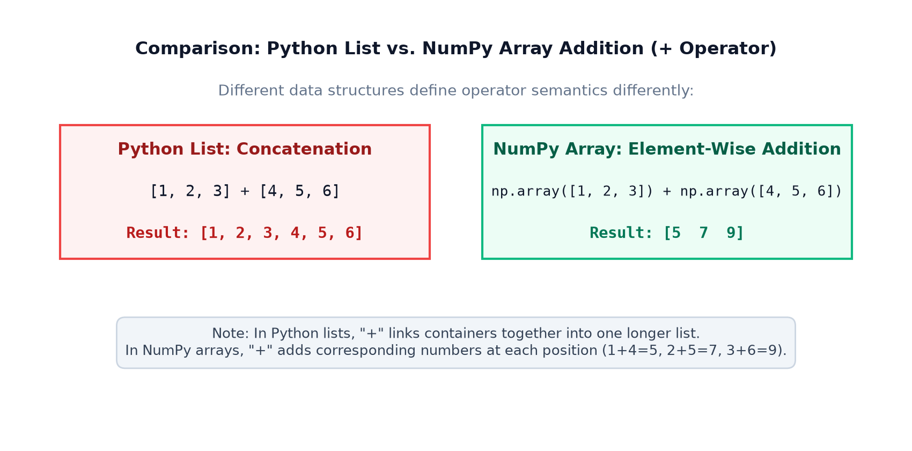
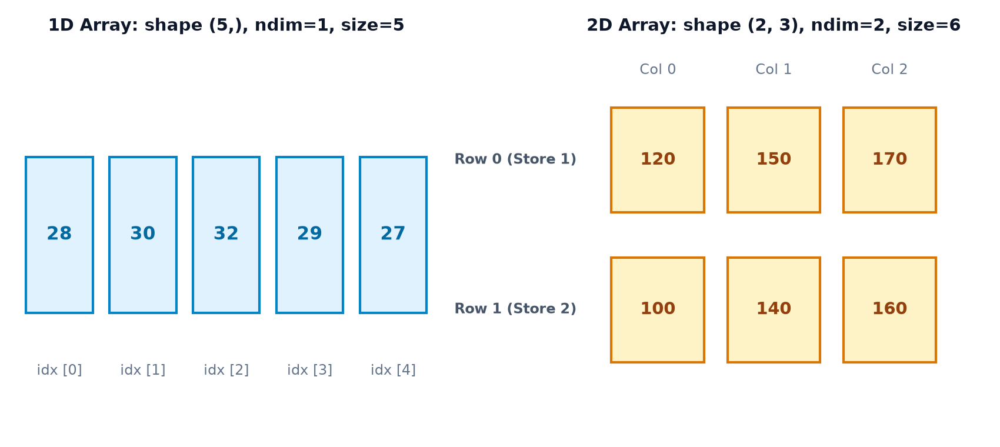
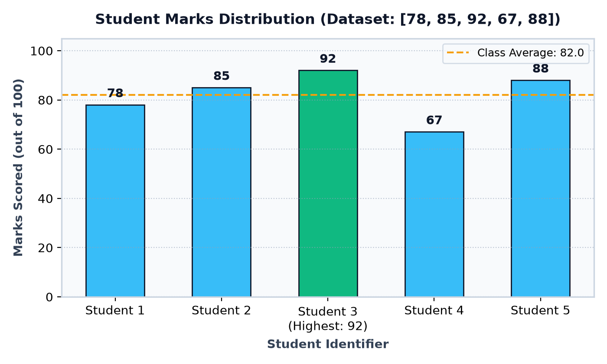
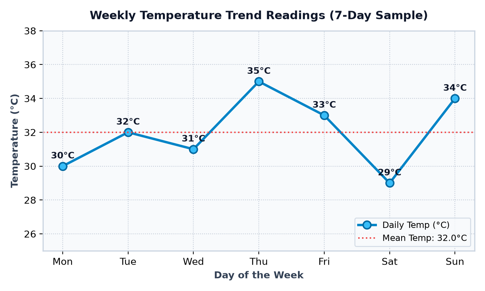
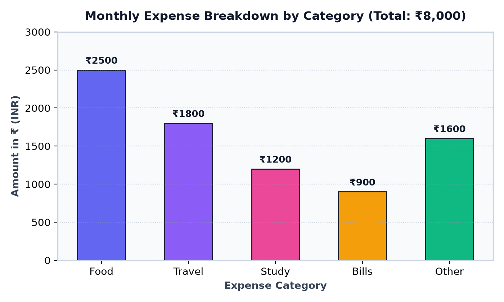
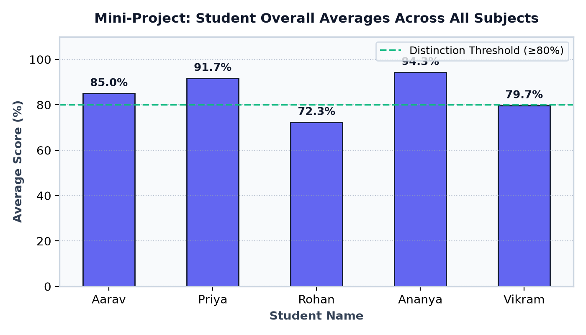
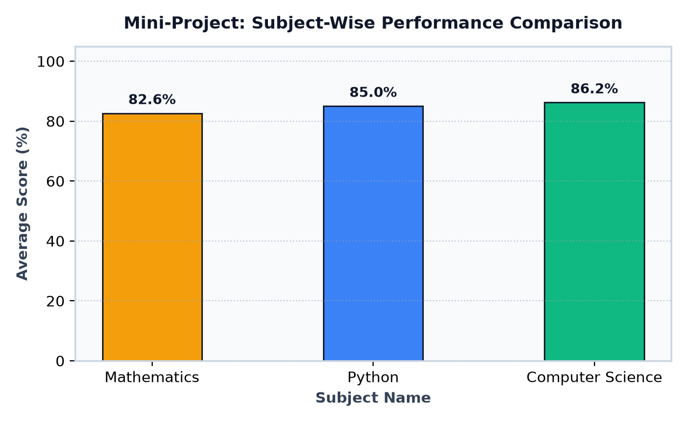

Topic 1 — Introduction to NumPy
Welcome to the foundation of modern scientific computing and Data Science in Python!
Discover what NumPy is, why numerical arrays revolutionize data analysis, how ndarray
differs from ordinary Python lists, vectorized element-wise operations, array dimensions,
essential mathematical functions, and building a complete Student Performance Analyzer.
Goals Learning Objectives
By the end of this lesson, you will be able to confidently explain and demonstrate:
- What NumPy is: The core Python library for numerical and scientific computing.
- NumPy origin: What NumPy stands for (Numerical Python).
- Numerical computing: Why modern applications require specialized array structures.
- Lists vs. Arrays: The architectural and operational differences between Python lists and NumPy arrays.
- Vectorization: How element-wise calculations eliminate repetitive manual loops.
- The
ndarrayobject: How NumPy represents 1D vectors, 2D matrices, and multidimensional grids. - Array attributes: How to inspect
.ndim(dimensions),.shape(dimensions breakdown), and.size(total elements). - Import conventions: The industry-standard
import numpy as npsyntax. - Creating arrays: Generating arrays with
np.array(),np.arange(),np.zeros(), andnp.ones(). - Real-world data applications: Analyzing student marks, temperatures, store sales, and monthly expenses.
- Ecosystem role: How NumPy forms the underlying foundation for Pandas, Matplotlib, and scikit-learn.
- Appropriate usage: When to choose a NumPy array and when an ordinary Python list is sufficient.
01 NumPy Kya Hai? (What Is NumPy?)
Imagine you are an educator managing the exam records for 1,000 students across an academic term. Before publishing results, your department needs to answer five vital questions:
- What is the total marks sum across the entire cohort?
- What is the class average score?
- What was the highest score achieved?
- What was the lowest score recorded?
- How many students scored above the 80% distinction threshold?
In standard Python, you can solve these problems using ordinary lists and for loops.
However, as datasets scale into thousands or millions of records—such as sensor telemetry, financial trades,
or high-resolution images—writing manual loops for every calculation becomes verbose, repetitive, and cumbersome.
This is where NumPy (Numerical Python) enters. Created by Travis Oliphant in 2005, NumPy is the fundamental open-source Python library designed specifically for fast, expressive, and convenient operations on multidimensional arrays.
[78, 85, 92, 67, 88]Unstructured list
np.array(marks)Contiguous ndarray
np.mean(), np.max()Fast operations
Avg: 82.0 | Max: 92
Actionable metrics
# A sample list representing marks scored by five students
student_marks = [78, 85, 92, 67, 88]
# Built-in Python functions for basic inspection
print("Number of students:", len(student_marks))
print("Highest mark:", max(student_marks))
print("Lowest mark:", min(student_marks))Line-by-Line Breakdown:
student_marks = [78, 85, 92, 67, 88]: Creates an ordinary Python list storing five integer mark values.len(student_marks): Counts the number of items in the list (5).max(...)andmin(...): Evaluates and extracts the highest (92) and lowest (67) values in the collection.
student_marks = [78, 85, 92, 67, 88]
# In pure Python, an average requires combining sum() and len()
total_marks = sum(student_marks)
average_marks = total_marks / len(student_marks)
print("Total marks:", total_marks)
print("Average marks:", average_marks)Explanation: The total marks sum is 78 + 85 + 92 + 67 + 88 = 410. Dividing 410 by 5 yields 82.0. Ordinary Python can perform these calculations, but as we expand to matrix operations, multi-axis statistics, and element-wise math, pure Python requires increasingly nested loops.
02 Why Do We Need NumPy?
Python lists are fantastic general-purpose containers. They can hold numbers, strings, dictionaries, and objects simultaneously. However, this flexibility comes with a trade-off: Python lists are not optimized for mathematical vector operations.
Here are the key reasons why data scientists and developers choose NumPy:
- Element-Wise Operations (Vectorization): Perform arithmetic across entire collections without writing a single
forloop. - Multidimensional Array Support: Effortlessly model 1D vectors, 2D tables/matrices, and 3D tensors.
- Built-In Statistical Functions: Direct methods for
mean(),std(),min(),max(), and percentiles. - Clean, Expressive Syntax: Write mathematical code that reads like standard algebraic formulas.
- Memory Efficiency: NumPy arrays store numeric data in compact, contiguous blocks of memory with fixed data types, unlike lists which store pointer references to individual boxed Python objects.
marks = [70, 75, 80, 85]
# In pure Python, updating each element requires an empty list and a loop
bonus_marks = []
for mark in marks:
bonus_marks.append(mark + 5)
print(bonus_marks)import numpy as np
marks = np.array([70, 75, 80, 85])
# NumPy applies the addition to EVERY element automatically!
bonus_marks = marks + 5
print(bonus_marks)Critical Operator Behavior: List vs. NumPy Array
Notice what happens when you use the + operator on two containers:
# 1. Pure Python lists: '+' concatenates (merges) the two lists
print([1, 2, 3] + [4, 5, 6])
# 2. NumPy arrays: '+' adds corresponding numbers element by element
import numpy as np
print(np.array([1, 2, 3]) + np.array([4, 5, 6]))
| Feature | Python List | NumPy Array (ndarray) |
|---|---|---|
| Primary Purpose | General-purpose sequence collection | Fast numerical and scientific computing |
| Data Types | Heterogeneous (can mix int, str, dict) | Homogeneous (fixed uniform numeric type) |
| The '+' Operator | Joins lists into a longer list (Concatenation) | Adds corresponding numbers (Element-wise) |
| Multiplication '*' | Repeats the list sequence: [1]*3 -> [1,1,1] |
Multiplies each number: arr*3 -> [3,6,9] |
| Memory Architecture | Array of pointers referencing boxed objects | Contiguous, compact C-level memory buffer |
03 Installing and Importing NumPy
NumPy is an external third-party library, which means it is not included in Python's standard library.
You install it once per Python environment using pip:
python -m pip install numpy
Once installed, you import it into your Python script. By universal convention across the entire
Data Science community, NumPy is always aliased as np:
import numpy as np
# Verify the installed NumPy version
print("NumPy version:", np.__version__)import numpy as np
# Pass a list of numbers into np.array()
numbers = np.array([10, 20, 30, 40])
print(numbers)
print("Object type:", type(numbers))If Python raises
ModuleNotFoundError: No module named 'numpy', it means:
- NumPy has not been installed into your active Python environment.
- You may have multiple Python versions installed, or your VS Code / Jupyter Notebook is pointing to a different virtual environment kernel.
- In Jupyter Notebooks, restart the kernel after running
%pip install numpy.
04 Understanding NumPy Arrays (ndarray)
The core data structure in NumPy is the ndarray (N-Dimensional Array).
To understand how it works, imagine everyday physical analogies:
- 1D Array (Vector): A single row of numbered storage lockers, side-by-side in a corridor.
- 2D Array (Matrix): A spreadsheet table or grid of cells with rows and columns.
- 3D Array (Tensor): A stack of transparent spreadsheet grids on top of each other (like layers of color channels in a digital photograph: Red, Green, Blue).
Essential Array Attributes
.ndim: The number of axes (dimensions) of the array. A 1D list hasndim=1; a 2D matrix hasndim=2..shape: A tuple of integers showing the size of the array along each axis. For 2 rows and 3 columns, shape is(2, 3)..size: The total number of elements across all dimensions. For(2, 3), size is2 * 3 = 6..dtype: The data type of elements stored in the array (e.g.int64,float64).
import numpy as np
temperatures = np.array([28, 30, 32, 29, 27])
print(temperatures)
print("Dimensions:", temperatures.ndim)
print("Shape:", temperatures.shape)
print("Number of elements:", temperatures.size)Why is the shape (5,)? In Python, a tuple with one value requires a trailing comma so Python recognizes it as a tuple rather than parenthesized math. (5,) signifies a 1D vector holding five elements along a single axis.
import numpy as np
# Sales figures for 2 store locations across 3 consecutive days
weekly_sales = np.array([
[120, 150, 170], # Row 0: Store 1 (Day 1, Day 2, Day 3)
[100, 140, 160] # Row 1: Store 2 (Day 1, Day 2, Day 3)
])
print(weekly_sales)
print("Dimensions:", weekly_sales.ndim)
print("Shape:", weekly_sales.shape)
print("Number of elements:", weekly_sales.size)
05 NumPy in Real-Life Data Science
Data in the real world is almost always numerical or converted into numbers:
- Student Performance: Tracking marks, term averages, percentiles, and pass/fail distributions.
- Weather & Climate: Daily temperature curves, barometric pressure fluctuations, and precipitation averages.
- Personal Finance: Monthly expense categorization, savings tracking, and budget deviation analysis.
- Retail & E-Commerce: Store inventory velocity, daily sales volumes, and revenue forecasting.
- Sports Analytics: Cricket batting strike rates, bowling averages, and athlete sprint timings.
- Machine Learning: Feature matrix normalization, gradient descent calculations, and vector embeddings.
import numpy as np
# Monthly expense amounts in INR across 5 categories: Food, Travel, Study, Bills, Other
expenses = np.array([2500, 1800, 1200, 900, 1600])
print("Total expenses:", np.sum(expenses))
print("Average expense:", np.mean(expenses))
print("Highest expense:", np.max(expenses))import numpy as np
# Daily recorded temperatures in Celsius from Monday to Sunday
temperatures = np.array([30, 32, 31, 35, 33, 29, 34])
print("Average temperature:", np.mean(temperatures))
print("Maximum temperature:", np.max(temperatures))
print("Minimum temperature:", np.min(temperatures))06 Visual Graphs and Charts
Numbers in terminal printouts can be hard to digest at a glance. In real Data Science workflows, NumPy works in close partnership with Matplotlib to transform raw numerical arrays into intuitive visual stories:
Chart 1: Student Marks Distribution

Educational Insight: Matplotlib effortlessly accepts NumPy arrays as the values for bar heights. Notice how the dashed horizontal line plots the class mean (82.0), making it instantly visible which students performed above and below average.
Chart 2: Seven-Day Temperature Trend

Educational Insight: Line charts excel at visualizing changes over continuous intervals like time. Thursday reaches the weekly peak of 35°C, while Saturday experiences the weekly low of 29°C.
Chart 3: Monthly Expenses Breakdown

Educational Insight: Food represents the largest single expenditure (₹2,500), while Utility Bills is the most economical (₹900). Category comparisons are best represented through distinct vertical bars.
07 Important NumPy Functions: A Preview
NumPy provides hundreds of high-performance functions. Here is a curated preview of the eight foundational functions you will use constantly:
| Function | Description | Usage Example |
|---|---|---|
np.array() |
Converts a Python sequence (list or tuple) into an ndarray | np.array([1, 2, 3]) |
np.sum() |
Computes the sum of all elements across the array or along an axis | np.sum(arr) |
np.mean() |
Computes the arithmetic average of array elements | np.mean(arr) |
np.min() |
Returns the minimum value in the array | np.min(arr) |
np.max() |
Returns the maximum value in the array | np.max(arr) |
np.arange() |
Generates evenly spaced values within a given interval (start, stop, step) | np.arange(1, 6) -> [1, 2, 3, 4, 5] |
np.zeros() |
Creates an array filled entirely with zeros of specified shape and dtype | np.zeros(3, dtype=int) -> [0, 0, 0] |
np.ones() |
Creates an array filled entirely with ones of specified shape and dtype | np.ones(4, dtype=int) -> [1, 1, 1, 1] |
import numpy as np
scores = np.array([65, 72, 81, 90, 87])
print("Total:", np.sum(scores))
print("Average:", np.mean(scores))
print("Minimum:", np.min(scores))
print("Maximum:", np.max(scores))import numpy as np
# 1. Range sequence from 1 up to (but excluding) 6
seq = np.arange(1, 6)
# 2. Array of three integer zeros
zeros_arr = np.zeros(3, dtype=int)
# 3. Array of four integer ones
ones_arr = np.ones(4, dtype=int)
print("Sequence:", seq)
print("Zeros:", zeros_arr)
print("Ones:", ones_arr)08 Common Beginner Mistakes
Incorrect: Calling arr = np.array([1, 2, 3]) without importing.
Result: NameError: name 'np' is not defined.
Correction: Always place import numpy as np at the top of your script.
Incorrect: Writing arr = array([1, 2, 3]).
Result: NameError: name 'array' is not defined.
Correction: Use the dot notation on the alias: np.array([1, 2, 3]).
Incorrect: Writing np.array(1, 2, 3) with individual numbers as arguments.
Result: TypeError: Field elements must be 2- or 3-tuples....
Correction: Wrap the numbers in a list or tuple: np.array([1, 2, 3]).
Incorrect: Assuming [10, 20] + 5 adds 5 to each element.
Result: TypeError: can only concatenate list (not "int") to list.
Correction: Convert to a NumPy array first: np.array([10, 20]) + 5 yields [15, 25].
Incorrect: Believing a 1D vector of 5 items has shape (1, 5).
Explanation: A 1D vector has shape (5,) (1 dimension). A 2D row matrix with one row and five columns has shape (1, 5) (2 dimensions).
Incorrect: Creating np.array([1, 2, "3"]) expecting numbers to stay numeric.
Result: Because NumPy arrays are homogeneous, all values are coerced into strings: array(['1', '2', '3'], dtype='<U11').
Correction: Ensure all input values share compatible numeric types.
Incorrect: Checking arr.size expecting a tuple.
Explanation: .size is a single integer count of all elements (e.g., 6). .shape is the dimensional dimensions tuple (e.g., (2, 3)).
Incorrect: Slicing an array sub = arr[0:2] and modifying sub[0] = 99, surprised that arr changes too!
Explanation: In NumPy, basic slices are views into the original memory buffer. If you need an independent copy, explicitly call sub = arr[0:2].copy().
Incorrect: Running pip install numpy in one terminal while your code runs in another environment.
Correction: Verify active Python path with python -c "import sys; print(sys.executable)".
Incorrect: Assuming you only need NumPy if you are training neural networks.
Correction: NumPy is used daily in financial analytics, web backend metrics, physics simulations, digital image processing, and basic spreadsheet replacements.
09 Interactive Learning Workshops
🔍 Workshop 1: NumPy Array Inspector & Shape Explorer Interactive
Select a sample array below to inspect its live dimensional attributes, shape tuple, element count, and memory structure:
⚡ Workshop 2: List vs. NumPy Operator Simulator Operator Challenge
Observe what happens when the + and * operators are executed on ordinary Python lists versus NumPy arrays:
10 Final Mini-Project — Student Performance Analyzer
Let's put everything we have learned into practice! In this beginner-friendly project, we will build a Student Performance Analyzer using pure NumPy. We will process marks for 5 students across 3 core subjects: Mathematics, Python, and Computer Science.
| Student Name | Mathematics | Python | Computer Science |
|---|---|---|---|
| Aarav | 85 | 90 | 80 |
| Priya | 92 | 88 | 95 |
| Rohan | 70 | 75 | 72 |
| Ananya | 95 | 92 | 96 |
| Vikram | 78 | 80 | 81 |
Algorithm Steps
- Store the student marks matrix in a 2D NumPy array of shape
(5, 3). - Compute each student's total marks along axis 1 (across subject columns).
- Compute each student's overall average score along axis 1.
- Compute the cohort subject averages along axis 0 (down student rows).
- Identify the single highest score and lowest score recorded across the entire cohort.
- Filter and identify students earning a distinction average (score ≥ 80.0%).
import numpy as np
# Student identifiers and subjects list
students = ["Aarav", "Priya", "Rohan", "Ananya", "Vikram"]
subjects = ["Mathematics", "Python", "Computer Science"]
# 2D Array: 5 rows (students) x 3 columns (subjects)
marks_matrix = np.array([
[85, 90, 80], # Aarav
[92, 88, 95], # Priya
[70, 75, 72], # Rohan
[95, 92, 96], # Ananya
[78, 80, 81] # Vikram
])
# 1. Calculate each student's total and average (axis=1: across columns)
totals = np.sum(marks_matrix, axis=1)
averages = np.mean(marks_matrix, axis=1)
# 2. Calculate subject averages across cohort (axis=0: down rows)
subject_averages = np.mean(marks_matrix, axis=0)
# 3. Overall highest and lowest marks
highest = np.max(marks_matrix)
lowest = np.min(marks_matrix)
print("=== INDIVIDUAL STUDENT PERFORMANCE ===")
for i in range(len(students)):
print(f"{students[i]}: Total = {totals[i]}, Average = {averages[i]:.1f}%")
print("\n=== COHORT SUBJECT AVERAGES ===")
for j in range(len(subjects)):
print(f"{subjects[j]}: {subject_averages[j]:.1f}%")
print("\n=== COHORT EXTREMES ===")
print(f"Overall Highest Mark: {highest}")
print(f"Overall Lowest Mark: {lowest}")
# 4. Filter distinction students (>= 80%)
distinction = [students[i] for i in range(len(students)) if averages[i] >= 80.0]
print(f"\nDistinction Achievers (>=80%): {distinction}")Project Visualizations


- Letter Grades: Write a helper function that maps each student's average to a letter grade (A for ≥ 90%, B for ≥ 80%, C for ≥ 70%).
- Curved Grading: Apply a +3 curve bonus to the Mathematics column using NumPy indexing
marks_matrix[:, 0] += 3. - Top Performer per Subject: Use
np.argmax(marks_matrix, axis=0)to find the student index who achieved the highest score in each subject!
11 Practice, Revision & Knowledge Challenges
Part A: 8 Output Prediction Questions
Q1: What will this list vs. array addition output?
import numpy as np
print([2, 4] + [6, 8])
print(np.array([2, 4]) + np.array([6, 8]))Answer:
[2, 4, 6, 8]
[ 8 12]Explanation: Pure Python lists concatenate into a longer list of 4 items. NumPy arrays perform element-wise addition: 2+6=8 and 4+8=12.
Q2: What is the shape of this array?
import numpy as np
data = np.array([[10, 20], [30, 40], [50, 60]])
print(data.shape, data.ndim)Answer: (3, 2) 2
Explanation: The array has 3 rows and 2 columns, making its shape (3, 2) with 2 dimensions (ndim=2).
Q3: What will np.arange(2, 9, 2) generate?
import numpy as np
print(np.arange(2, 9, 2))Answer: [2 4 6 8]
Explanation: Generates numbers starting at 2, stepping by 2, up to (but excluding) 9.
Q4: What will scalar multiplication on a NumPy array output?
import numpy as np
nums = np.array([5, 10, 15])
print(nums * 2)Answer: [10 20 30]
Explanation: NumPy applies scalar multiplication element by element, multiplying each value by 2.
Q5: What happens when mixed types are supplied?
import numpy as np
arr = np.array([1, 2, "3"])
print(arr.dtype.kind)Answer: U (Unicode String)
Explanation: Because arrays require homogeneous types, NumPy converts all integers into strings.
Q6: What is arr.size for a (4, 3) matrix?
Answer: 12
Explanation: size represents the total element count: 4 × 3 = 12.
Q7: What does np.zeros((2, 2)) produce?
Answer:
[[0. 0.]
[0. 0.]]Explanation: Produces a 2 × 2 matrix initialized to float zeros (0.) by default.
Q8: What does np.mean(np.array([10, 20, 30])) return?
Answer: 20.0
Explanation: (10 + 20 + 30) / 3 = 60 / 3 = 20.0.
Part B: 6 Short Coding Exercises
Exercise 1: Celsius to Fahrenheit Converter
Task: Given Celsius temperatures [0, 20, 37, 100], convert them all to Fahrenheit using the vectorized formula: F = (C * 9/5) + 32.
import numpy as np
celsius = np.array([0, 20, 37, 100])
fahrenheit = (celsius * 9/5) + 32
print(fahrenheit) # [ 32. 68. 98.6 212. ]Exercise 2: Create a 3x3 Identity-Like Matrix with Ones
Task: Create a 3 × 3 grid filled entirely with integer ones.
import numpy as np
grid = np.ones((3, 3), dtype=int)
print(grid)Exercise 3: Calculate Total Weekly Salary
Task: Given hourly rates [25, 30, 28] and hours worked [40, 35, 42], calculate total earnings per worker and combined payroll using NumPy vectorization.
import numpy as np
rates = np.array([25, 30, 28])
hours = np.array([40, 35, 42])
earnings = rates * hours
total_payroll = np.sum(earnings)
print("Per worker:", earnings) # [1000 1050 1176]
print("Total payroll:", total_payroll) # 3226Exercise 4: Even Number Array Generator
Task: Use np.arange() to create an array of even integers from 10 to 30 (inclusive).
import numpy as np
evens = np.arange(10, 32, 2)
print(evens) # [10 12 14 16 18 20 22 24 26 28 30]Exercise 5: Array Summary Function
Task: Write a function summarize_array(arr) that prints its shape, dimensions, size, mean, and range (max - min).
import numpy as np
def summarize_array(arr):
print("Shape:", arr.shape)
print("Dimensions:", arr.ndim)
print("Size:", arr.size)
print("Mean:", np.mean(arr))
print("Range:", np.max(arr) - np.min(arr))
summarize_array(np.array([15, 22, 8, 45, 30]))Exercise 6: Find Scores Above Threshold
Task: Given an array of student test marks, count how many scores are 75 or above.
import numpy as np
marks = np.array([82, 65, 75, 90, 58, 88])
above_75_count = np.sum(marks >= 75)
print("Count >= 75:", above_75_count) # 4Part C: 5 Debugging Questions
Debug 1: TypeError on Array Creation
Broken Code: arr = np.array(10, 20, 30)
Error: TypeError: Field elements must be 2- or 3-tuples...
Fix: Pass elements enclosed in a sequence: arr = np.array([10, 20, 30]).
Debug 2: Concatenating Instead of Adding
Broken Code: Student wanted [15, 25] from [10, 20] + [5, 5], but received [10, 20, 5, 5].
Fix: The inputs were plain Python lists. Wrap in NumPy arrays: np.array([10, 20]) + np.array([5, 5]).
Debug 3: Calling .size as a Function
Broken Code: total_items = arr.size()
Error: TypeError: 'int' object is not callable
Fix: .size is a property, not a method. Use arr.size without parentheses.
Debug 4: NameError on np
Broken Code: arr = np.arange(5) without an import line.
Fix: Add import numpy as np at the top of the file.
Debug 5: Incompatible Array Addition Shapes
Broken Code: np.array([1, 2]) + np.array([1, 2, 3])
Error: ValueError: operands could not be broadcast together with shapes (2,) (3,)
Fix: Both arrays must have compatible shapes for element-wise addition.
Part D: 6 Conceptual MCQs
1. What does the name "NumPy" stand for?
A) Number Python | B) Numerical Python | C) Numeric Processing | D) Node Python
Answer: B
2. What is the standard industry import alias for NumPy?
A) import numpy as n | B) import numpy as num | C) import numpy as np | D) import np
Answer: C
3. Which property reveals the number of dimensions of an array?
A) .shape | B) .ndim | C) .size | D) .len
Answer: B
4. What is the output of np.array([1, 2]) * 3?
A) [1, 2, 1, 2, 1, 2] | B) [3, 6] | C) [1, 2, 3] | D) [3, 2]
Answer: B
5. Which function creates an array of numbers from 0 up to 4?
A) np.range(5) | B) np.arange(5) | C) np.zeros(5) | D) np.ones(5)
Answer: B
6. What is the core underlying data structure of NumPy?
A) DataFrame | B) Series | C) ndarray | D) tensor_list
Answer: C
Part E: 2 Real-Life Mini-Challenges
Mini-Challenge 1: Cricket Batting Strike Rate Calculator
Scenario: A batsman scores runs [45, 62, 18, 85, 34] in five matches facing balls [35, 40, 22, 55, 25].
Formula: Strike Rate = (Runs / Balls) * 100.
import numpy as np
runs = np.array([45, 62, 18, 85, 34])
balls = np.array([35, 40, 22, 55, 25])
strike_rates = (runs / balls) * 100
for i in range(len(runs)):
print(f"Match {i+1}: Strike Rate = {strike_rates[i]:.2f}")Mini-Challenge 2: Daily Step Tracker & Calorie Burner
Scenario: You recorded your daily step counts across a week: [6500, 8200, 10400, 7100, 9300, 12500, 8900]. Each step burns approximately 0.04 calories.
import numpy as np
steps = np.array([6500, 8200, 10400, 7100, 9300, 12500, 8900])
calories = steps * 0.04
print("Total Weekly Steps:", np.sum(steps))
print("Daily Step Average:", np.mean(steps))
print("Total Calories Burned:", np.sum(calories))NumPy Topic 1 Quick Reference Cheat Sheet
| Syntax / Function | Example Code | What It Does |
|---|---|---|
import numpy as np |
import numpy as np |
Imports NumPy with standard industry alias |
np.array() |
np.array([10, 20, 30]) |
Creates an ndarray from a list or sequence |
arr + scalar |
arr + 5 |
Vectorized addition: adds 5 to every element |
arr1 + arr2 |
a + b |
Element-wise addition: adds corresponding values |
.ndim |
arr.ndim |
Returns number of array axes (1 for 1D, 2 for 2D) |
.shape |
arr.shape |
Returns tuple of array dimensions (e.g., (2, 3)) |
.size |
arr.size |
Returns total count of elements in array |
np.sum() |
np.sum(arr, axis=0) |
Sum of elements (optional axis: 0=cols, 1=rows) |
np.mean() |
np.mean(arr) |
Computes arithmetic average of elements |
np.arange() |
np.arange(1, 10, 2) |
Generates array of stepped numbers |
np.zeros() |
np.zeros((2, 3)) |
Creates array filled with zeros |
np.ones() |
np.ones(4, dtype=int) |
Creates array filled with ones |
Self-Paced Mastery Checklist
- ✅ I can explain why NumPy was created and what it stands for (Numerical Python).
- ✅ I understand how NumPy arrays differ from ordinary Python lists in memory and operator behavior.
- ✅ I know how to install NumPy via
pipand import it withimport numpy as np. - ✅ I can inspect
.ndim,.shape, and.sizeon 1D and 2D arrays. - ✅ I understand how vectorized arithmetic eliminates manual
forloops. - ✅ I know how to calculate
sum(),mean(),min(), andmax()on datasets. - ✅ I can generate arrays using
np.arange(),np.zeros(), andnp.ones(). - ✅ I know how NumPy arrays supply numerical data to Matplotlib charts.
- ✅ I have completed and verified the Student Performance Analyzer mini-project!